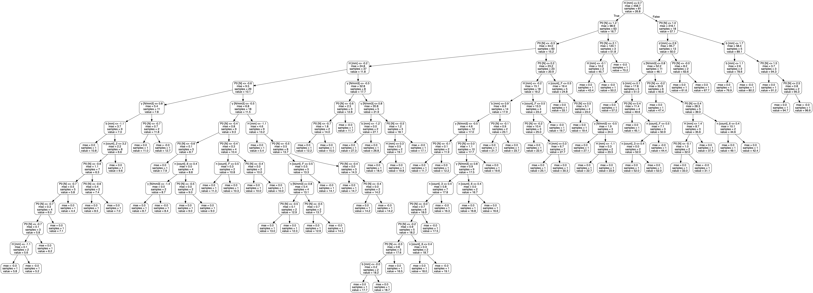

Just as the picture suggests, A wall separating two platforms has different elevations. The wall shown in the picture has a tendency to incline to the right because the mass on the left side of the wall is much greater. Therefore, we attach this root-inspired anchor model into the wall, which provides the resistance against the force on the left side.

In the real world setting, this model is of great significance! For example, we can utilize this model in transmission towers. Because of the wind blowing and the weight of the wire, sometimes, the foundation is not solid enough and may get uplifted. Then, the anchored model came into practice. People can implement them down the ground, and make the structure as solid as possible. Other than that, we can also utilize the same model in retaining wall, solidifying dams, and reinforcing the slope.
During experiments, Dr. Mallet took steps of embedding the model into the soil, and then utilized machines to vertically pull up the anchor. After repetitive experiments using different models and particulates, 181 data sets are collected.

Number of branches ( n[count] )
Internal branching angle ( α [°] )
Length of the branch ( L [mm] )
Total height of the model ( H [mm] )
Horizontal width ( b[mm] )
Length of the stem ( Ls [mm] )
Diameter of the model ( d [mm] )
Radians between each branch, evenly distributed ( 2π/n [rad] )
Property of soil (Unit Weight Force) ( γ [N/mm3] )
Displacement made by the pullout force ( δ(Pmax) [mm] )
The derivative of the Pmax over displacement (max(ktan) [N/mm])
Weight of the soil immediately above model (γAH' [N])
Volume of the model ( Vroot [mm3] )
Initial start pull force ( P0 [N] )
Soil relative density ( DR [ ] )
Material
Mean diameter of the sand ( d50 [mm] )
Strength of the soil, friction angle ( φ [°] )
Weight of soil’s length to the whole length ( f )
Total number of Features: 19
Maximum pullout force ( Pmax [N] )
The objective of this project is to develop a machine-learning-based method to predict and calculate the pullout force. To make this project more feasible to carry out, we will only use the features that are unique (not dependent on other properties).
Our group implements different algorithms to yield the best prediction models.

The ratio of test data to training data was kept constant at 3 to 1 for each model.
In order to achieve a more accurate result, K fold cross-validation was also implemented for the data set. By combatting the overfitting issue, 10 fold validation is used in congruence with Random Forest ensemble learning. This means we utilize the same random forest algorithm, however, each 10% of data acted as the test data for one iteration. On average, for 2-10 fold validation, the average k-fold value is 0.89834. This means that our predictive model is pretty reliable and successful.
There are several improvements that we can probably do in order to make our predictive model even better. Firstly, the measurement of data could have some errors because of the operation of data measurement. We get the pullout force by analyzing the amount of soil being pullout (which could not be exactly accurate). We also have some bad data in our data, we already removed them and reduced the number of datasets for better results. For example, the feature named n-count, one of the possible input is infinity (which can not be converted to quantified data easily), we have to use a certain method (np.dummies) to treat this as new features. This may make our predictive model less accurate.
Furthermore, under the circumstance that we only have 177 data inputs, if we could have more data points, we could definitely utilize more of them to become our train/ test/ validation parts. It could probably prevent overfitting more effectively, therefore enhance the predictive model quality.
Also, as we are getting to learn more machine learning and data mining related knowledge, we would like to apply feature engineering into our predictive models. By doing this, we can adapt to a wider variety of conditions.
Finally, while applying these predictive models into practice, we should research into more soil types. Currently, we only researched into three types of soil, and we are definitely encountering more in the real setting.
